Poison NovaTop
Poison NovaTop
Leveling
Rune za ves build (22)
 Nef
Nef Ral
Ral Amn ×2
Amn ×2 Dol
Dol Hel ×2
Hel ×2 Lem
Lem Pul
Pul Um
Um Mal
Mal Ist ×2
Ist ×2 Gul
Gul Vex ×2
Vex ×2 Ohm ×3
Ohm ×3 Lo
Lo Cham
Cham Zod
ZodPlanerji (Hiim)
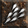
Desecrate 20Golem Mastery 20Poison Nova 20 Poison Strike 20
Poison Strike 20 Blood Warp 13
Blood Warp 13 Bone Armor 10
Bone Armor 10 Blood Golem 1
Blood Golem 1 Clay Golem 1
Clay Golem 1 Corpse Explosion 1Teeth 1
Corpse Explosion 1Teeth 1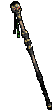
Druga rokaSkull Collectorkorupcija: socketi HelmAndariel's Visagekorupcija: socketi
HelmAndariel's Visagekorupcija: socketi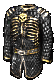
OklepCage of the Unsulliedkorupcija: Repair Durability Enhanced Defense RokaviceTrang-Oul's Clawskorupcija: Faster Cast Rate
RokaviceTrang-Oul's Clawskorupcija: Faster Cast Rate PasSiggard's Staunchkorupcija: Faster Cast Rate
PasSiggard's Staunchkorupcija: Faster Cast Rate AmuletAmulet
AmuletAmulet PrstanBul Katho's Wedding Bandkorupcija: Life per killPrstanWisp Projectorkorupcija: Life per kill
PrstanBul Katho's Wedding Bandkorupcija: Life per killPrstanWisp Projectorkorupcija: Life per kill Switch 2Call to Arms (eth)AmnRalMalIstOhm · Poleaxe
Switch 2Call to Arms (eth)AmnRalMalIstOhm · PoleaxeMerc: Iron Wolf (Static Field)
 HelmFlickering Flame (eth)NefPulVex · Demonhead
HelmFlickering Flame (eth)NefPulVex · Demonhead OklepInnocenceGulLemZodHel · Lacquered Plate
OklepInnocenceGulLemZodHel · Lacquered Plate ŠkornjiMarrowwalkkorupcija: Reduced Curse DurationRokaviceTrang-Oul's Clawskorupcija: Faster Cast Rate
ŠkornjiMarrowwalkkorupcija: Reduced Curse DurationRokaviceTrang-Oul's Clawskorupcija: Faster Cast Rate OrožjeSkyfallkorupcija: Faster Cast Rate
OrožjeSkyfallkorupcija: Faster Cast Rate Druga rokaExileVexOhmIstDol · Sacred Rondache
Druga rokaExileVexOhmIstDol · Sacred RondacheRecepti in rune · 16 run, 4 runewordi
NefRalAmnDolHelLemPulMalIst ×2GulVex ×2Ohm ×2ZodPoison Nova 20Poison Strike 20Blood Warp 15Revive 12Golem Mastery 10Bone Armor 2 Amplify Damage 1Blood Golem 1Clay Golem 1Corpse Explosion 1
Amplify Damage 1Blood Golem 1Clay Golem 1Corpse Explosion 1 Life Tap 1
Life Tap 1 Lower Resist 1
Lower Resist 1 Raise Skeletal Mage 1
Raise Skeletal Mage 1 Raise Skeleton Archer 1
Raise Skeleton Archer 1 Raise Skeleton Warrior 1Teeth 1Weaken 1
Raise Skeleton Warrior 1Teeth 1Weaken 1 OrožjeDeath's Webkorupcija: Psn Pierce
OrožjeDeath's Webkorupcija: Psn Pierce Druga rokaTrang-Oul's Wingkorupcija: socketi
Druga rokaTrang-Oul's Wingkorupcija: socketi Helm2/20 Circlet NecromancerDiadem · korupcija: socketi
Helm2/20 Circlet NecromancerDiadem · korupcija: socketi OklepSkullder's Irekorupcija: socketiRokaviceTrang-Oul's Clawskorupcija: Faster Cast Rate
OklepSkullder's Irekorupcija: socketiRokaviceTrang-Oul's Clawskorupcija: Faster Cast Rate PasTrang-Oul's Girth
PasTrang-Oul's Girth ŠkornjiSilkweavekorupcija: Life per killAmuletBlood Craft - Necromancerkorupcija: All SkillsPrstanThe Stone of Jordankorupcija: Faster Cast RatePrstanThe Stone of Jordankorupcija: Faster Cast Rate
ŠkornjiSilkweavekorupcija: Life per killAmuletBlood Craft - Necromancerkorupcija: All SkillsPrstanThe Stone of Jordankorupcija: Faster Cast RatePrstanThe Stone of Jordankorupcija: Faster Cast Rate Hellfire Torch
Hellfire Torch Annihilus +2
Annihilus +2Merc: Iron Wolf (Static Field)
 HelmGriffon's Eye
HelmGriffon's Eye OklepInnocenceGulLemZodHel · Archon Plate
OklepInnocenceGulLemZodHel · Archon Plate OrožjeDoomHelOhmUmLoCham · Phase BladeVexOhmIstDol · Vortex Shield
OrožjeDoomHelOhmUmLoCham · Phase BladeVexOhmIstDol · Vortex Shield RokaviceOccultist
RokaviceOccultist ŠkornjiImp ShankMesh BootsPasSiggard's Staunch
ŠkornjiImp ShankMesh BootsPasSiggard's StaunchRecepti in rune · 14 run, 3 runewordi, 1 craft
AmnDolHel ×2LemUmIstGulVexOhm ×2LoChamZodPoison Nova 20Poison Strike 20 Bone Wall 13Blood Warp 12Blood Golem 1Bone Armor 1Clay Golem 1Corpse Explosion 1Teeth 1HelmAndariel's Visagev socketih: 3× Rainbow Facet (Poison) · korupcija: socketi
Bone Wall 13Blood Warp 12Blood Golem 1Bone Armor 1Clay Golem 1Corpse Explosion 1Teeth 1HelmAndariel's Visagev socketih: 3× Rainbow Facet (Poison) · korupcija: socketi OklepBlack Hadesv socketih: 4× Rainbow Facet (Poison) · korupcija: SkillRokaviceTrang-Oul's Clawskorupcija: Faster Cast RatePasSiggard's Staunchkorupcija: Faster Cast RateŠkornjiImp ShankMesh Boots · korupcija: Life per killAmuletBlood Craft - Necromancerkorupcija: All SkillsPrstanConstricting Ringkorupcija: Life per killPrstanWisp Projectorkorupcija: Life per killHellfire Torch
OklepBlack Hadesv socketih: 4× Rainbow Facet (Poison) · korupcija: SkillRokaviceTrang-Oul's Clawskorupcija: Faster Cast RatePasSiggard's Staunchkorupcija: Faster Cast RateŠkornjiImp ShankMesh Boots · korupcija: Life per killAmuletBlood Craft - Necromancerkorupcija: All SkillsPrstanConstricting Ringkorupcija: Life per killPrstanWisp Projectorkorupcija: Life per killHellfire Torch Annihilus
AnnihilusMerc: Iron Wolf (Static Field)
 HelmFlickering FlameNefPulVex · Bone VisageOklepInnocenceGulLemZodHel · Lacquered PlateOrožjeSkyfallkorupcija: Light PierceVexOhmIstDol · Vortex Shield
HelmFlickering FlameNefPulVex · Bone VisageOklepInnocenceGulLemZodHel · Lacquered PlateOrožjeSkyfallkorupcija: Light PierceVexOhmIstDol · Vortex Shield RokaviceDracul's Graspkorupcija: All ResistancesŠkornjiMarrowwalkkorupcija: Physical Damage Reduction %
RokaviceDracul's Graspkorupcija: All ResistancesŠkornjiMarrowwalkkorupcija: Physical Damage Reduction % PasArachnid Meshkorupcija: Physical Damage Reduction %
PasArachnid Meshkorupcija: Physical Damage Reduction %Recepti in rune · 12 run, 3 runewordi, 1 craft
NefAmnDolHelLemPulIstGulVex ×2OhmZodKaj nosijo liki 90+ v S13 (skill Poison Nova na 20)
Trang-Oul's Claws 85 %Death's Web 78 %Trang-Oul's Wing 76 %Trang-Oul's Girth 75 % Trang-Oul's Scales 55 %
Trang-Oul's Scales 55 % Trang-Oul's Guise 53 %
Trang-Oul's Guise 53 % Gheed's Fortune 37 %Wisp Projector 21 %The Stone of Jordan 19 %
Gheed's Fortune 37 %Wisp Projector 21 %The Stone of Jordan 19 % Steel Carapace 17 %Bul-Kathos' Wedding Band 15 %Andariel's Visage 13 %
Steel Carapace 17 %Bul-Kathos' Wedding Band 15 %Andariel's Visage 13 %Video in vodiči
Poison StrikeTop
Leveling
Rune za ves build (24)
 EthAmn
EthAmn Shael ×5DolHel ×2
Shael ×5DolHel ×2 FalLem ×2UmIstGul ×2VexOhmCham ×2Zod ×3
FalLem ×2UmIstGul ×2VexOhmCham ×2Zod ×3Planerji (Hiim)
Bone Armor 20Desecrate 20Poison Strike 20Blood Golem 10Golem Mastery 5Blood Warp 1Clay Golem 1Corpse Explosion 1Teeth 1 OrožjeThe Jade Tan Dov socketih: 3× Shael Rune · korupcija: socketi
OrožjeThe Jade Tan Dov socketih: 3× Shael Rune · korupcija: socketi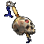
Druga rokaRhyme (Poison Strike)ShaelEth · Gargoyle Head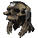
HelmWormskull OklepAngelic Mantlekorupcija: socketi
OklepAngelic Mantlekorupcija: socketi RokaviceSigon's Gage
RokaviceSigon's Gage PasString of Ears
PasString of Ears ŠkornjiSigon's SabotAmuletAngelic WingsPrstanAngelic HaloPrstanAngelic Halo
ŠkornjiSigon's SabotAmuletAngelic WingsPrstanAngelic HaloPrstanAngelic HaloMerc: Rogue Scout (Vigor)
Recepti in rune · 5 run, 1 runeword
EthShael ×4Bone Armor 20Desecrate 20Golem Mastery 20Poison Strike 20Blood Warp 13Blood Golem 1Clay Golem 1Corpse Explosion 1Teeth 1ChamFalUm · Cinquedeas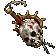
Druga rokaMartyrdomv socketih: 3× Scintillating Jewel of Fervor · korupcija: socketiHelmAndariel's Visagev socketih: 3× Rainbow Facet (Poison) · korupcija: socketiOklepInnocenceGulLemZodHel · Archon PlateRokaviceTrang-Oul's Clawskorupcija: Faster Cast RatePasArachnid Meshkorupcija: Increased Attack SpeedŠkornjiMarrowwalkkorupcija: Life per killAmuletBlood Craft - Necromancerkorupcija: All ResistancesPrstanThe Stone of Jordankorupcija: Faster Cast RatePrstanWisp Projectorkorupcija: Mana per killHellfire TorchAnnihilusMerc: Iron Wolf (Prayer)
HelmFerocityZodChamShael · Bone VisageOklepInnocenceGulLemZodHel · Archon PlateVexOhmIstDol · Vortex Shield RokaviceBloodfist
RokaviceBloodfist ŠkornjiSandstorm TrekPasSiggard's Staunch
ŠkornjiSandstorm TrekPasSiggard's StaunchRecepti in rune · 19 run, 5 runewordov, 1 craft
AmnShaelDolHel ×2FalLem ×2UmIstGul ×2VexOhmCham ×2Zod ×3Bone Armor 20Desecrate 20Poison Strike 20Blood Golem 15Golem Mastery 15Blood Warp 7Clay Golem 1Corpse Explosion 1 Iron Golem 1Teeth 1
Iron Golem 1Teeth 1 OrožjeBlackbog's Sharpv socketih: 2× Scintillating Jewel of Fervor, Shael Rune · korupcija: socketiDruga rokaTrang-Oul's Wingv socketih: 2× Rainbow Facet (Poison) · korupcija: socketiHelmTrang-Oul's Guisev socketih: 3× Rainbow Facet (Poison) · korupcija: socketiOklepTrang-Oul's Scalesv socketih: 3× Rainbow Facet (Poison) · korupcija: socketiRokaviceTrang-Oul's Clawskorupcija: Increased Attack SpeedPasTrang-Oul's Girthkorupcija: Increased Attack SpeedŠkornjiSilkweavekorupcija: Life per killAmuletAngelic Wingskorupcija: All SkillsPrstanRaven Frostkorupcija: Life per killPrstanAngelic Halokorupcija: Life per kill
OrožjeBlackbog's Sharpv socketih: 2× Scintillating Jewel of Fervor, Shael Rune · korupcija: socketiDruga rokaTrang-Oul's Wingv socketih: 2× Rainbow Facet (Poison) · korupcija: socketiHelmTrang-Oul's Guisev socketih: 3× Rainbow Facet (Poison) · korupcija: socketiOklepTrang-Oul's Scalesv socketih: 3× Rainbow Facet (Poison) · korupcija: socketiRokaviceTrang-Oul's Clawskorupcija: Increased Attack SpeedPasTrang-Oul's Girthkorupcija: Increased Attack SpeedŠkornjiSilkweavekorupcija: Life per killAmuletAngelic Wingskorupcija: All SkillsPrstanRaven Frostkorupcija: Life per killPrstanAngelic Halokorupcija: Life per killMerc: Rogue Scout (Vigor)
 HelmRockstopper
HelmRockstopper OklepRockfleece
OklepRockfleece OrožjePus Spitter
OrožjePus Spitter RokaviceLava Gout
RokaviceLava Gout ŠkornjiRite of PassagePasString of Ears
ŠkornjiRite of PassagePasString of EarsRecepti in rune · 1 runa
ShaelKaj nosijo liki 90+ v S13 (skill Poison Strike na 20)
Trang-Oul's Claws 84 %Trang-Oul's Girth 50 %Trang-Oul's Wing 49 %Death's Web 45 %Gheed's Fortune 44 %Andariel's Visage 38 %Trang-Oul's Scales 37 %Trang-Oul's Guise 35 %Martyrdom 33 %Plague 25 %Innocence 23 %Arachnid Mesh 23 %Teeth / BonespearTopStarter
Leveling
Rune za ves build (16)
 TirEth ×3
TirEth ×3 Tal ×3Ral
Tal ×3Ral Ort ×2
Ort ×2 Sol ×3Dol
Sol ×3Dol Io
Io Lum
LumPlanerji (Hiim)
Bone Armor 20 Bone Spear 20
Bone Spear 20 Bone Spirit 20Teeth 20Blood Warp 9Blood Golem 1Clay Golem 1DolIo · Tomb WandEthLum · Gargoyle Head
Bone Spirit 20Teeth 20Blood Warp 9Blood Golem 1Clay Golem 1DolIo · Tomb WandEthLum · Gargoyle Head OklepSpirit ShroudRokaviceTrang-Oul's Claws
OklepSpirit ShroudRokaviceTrang-Oul's Claws PasGloom's TrapŠkornjiRite of PassageAmuletVenomous AmuletPrstanNagelringPrstanNagelring
PasGloom's TrapŠkornjiRite of PassageAmuletVenomous AmuletPrstanNagelringPrstanNagelringMerc: Desert Guard (Defiance)
HelmLoreOrtSol · Bone HelmOklepStealthTalEth · Light Plate OrožjeInsightRalTirTalSol · War Pike
OrožjeInsightRalTirTalSol · War PikeRecepti in rune · 12 run, 5 runewordov
TirEth ×2Tal ×2RalOrtSol ×2DolIoLumBone Armor 20Bone Spear 20Bone Spirit 20Teeth 20Blood Warp 9Blood Golem 1Clay Golem 1DolIo · Tomb WandEthLum · Gargoyle HeadHelmLoreOrtSol · Bone HelmOklepStealthTalEth · Light PlateAmuletVenomous AmuletMerc: Desert Guard (Defiance)
HelmLoreOrtSol · Bone HelmOklepStealthTalEth · Light PlateOrožjeInsightRalTirTalSol · War PikeRecepti in rune · 16 run, 7 runewordov
TirEth ×3Tal ×3RalOrt ×2Sol ×3DolIoLumKaj nosijo liki 90+ v S13 (skill Teeth na 20)
 Boneshade 73 %Arachnid Mesh 64 %Trang-Oul's Claws 54 %Gheed's Fortune 53 %
Boneshade 73 %Arachnid Mesh 64 %Trang-Oul's Claws 54 %Gheed's Fortune 53 % Skin of the Vipermagi 31 %
Skin of the Vipermagi 31 % Harlequin Crest 29 %
Harlequin Crest 29 %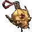
Darkforce Spawn 26 %The Stone of Jordan 22 %Mara's Kaleidoscope 18 %Trang-Oul's Girth 17 %Trang-Oul's Scales 16 % Que-Hegan's Wisdom 16 %
Que-Hegan's Wisdom 16 %Video in vodiči
Corpse ExplosionGood
Leveling
Rune za ves build (25)
TirNefEth ×2Tal ×2RalOrtSol ×2DolIo ×3LumPul ×3MalIstVex Ber ×2
Ber ×2 Jah ×2
Jah ×2Planerji (Hiim)
Amplify Damage 20Corpse Explosion 20Desecrate 20Revive 20Blood Warp 5Blood Golem 1Clay Golem 1Poison Strike 1Raise Skeletal Mage 1Raise Skeleton Archer 1Raise Skeleton Warrior 1DolIo · Tomb WandEthLum · Gargoyle Head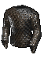
OklepSpirit Forge RokaviceMagefistPasGloom's TrapŠkornjiRite of PassageAmuletVenomous AmuletPrstanNagelringPrstanNagelring
RokaviceMagefistPasGloom's TrapŠkornjiRite of PassageAmuletVenomous AmuletPrstanNagelringPrstanNagelringMerc: Ascendant (Amplify Damage)
HelmLoreOrtSol · Bone HelmOklepStealthTalEth · Light Plate OrožjeInsightRalTirTalSol · Archon Staff
OrožjeInsightRalTirTalSol · Archon StaffRecepti in rune · 12 run, 5 runewordov
TirEth ×2Tal ×2RalOrtSol ×2DolIoLumAmplify Damage 20Corpse Explosion 20Desecrate 20Revive 20Blood Warp 15Blood Golem 1Bone Armor 1Clay Golem 1Golem Mastery 1Iron Golem 1Poison Strike 1Raise Skeletal Mage 1Raise Skeleton Archer 1Raise Skeleton Warrior 1Teeth 1 OrožjeMang Song's Lessonv socketih: 6× Rainbow Facet (Fire) · korupcija: socketi
OrožjeMang Song's Lessonv socketih: 6× Rainbow Facet (Fire) · korupcija: socketi HelmKira's Guardianv socketih: 3× Rainbow Facet (Fire) · korupcija: socketi
HelmKira's Guardianv socketih: 3× Rainbow Facet (Fire) · korupcija: socketi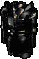
OklepCorpsemournv socketih: 3× Rainbow Facet (Fire) · korupcija: socketiRokaviceMagefistkorupcija: Mana per killPasArachnid Meshkorupcija: Max ResistŠkornjiImp ShankMesh Boots · korupcija: Life per killAmuletVenomous Amuletkorupcija: All SkillsPrstanWisp Projectorkorupcija: Life per killPrstanWisp Projectorkorupcija: Life per killHellfire TorchAnnihilus +2Merc: Desert Guard (Defiance)
HelmFlickering FlameNefPulVex · Bone Visage OklepShaftstopOrožjeInfinityBerMalBerIst · War Pike
OklepShaftstopOrožjeInfinityBerMalBerIst · War Pike RokaviceLaying of HandsŠkornjiMarrowwalk
RokaviceLaying of HandsŠkornjiMarrowwalk PasNosferatu's Coil
PasNosferatu's CoilRecepti in rune · 7 run, 2 runeworda
NefPulMalIstVexBer ×2Amplify Damage 20Corpse Explosion 20Desecrate 20Revive 20Blood Warp 15Blood Golem 1Bone Armor 1Clay Golem 1Golem Mastery 1Iron Golem 1Poison Strike 1Raise Skeletal Mage 1Raise Skeleton Archer 1Raise Skeleton Warrior 1Teeth 1OrožjeDeath's Webv socketih: 2× Rainbow Facet (Fire) · korupcija: All SkillsHelmKira's Guardianv socketih: 3× Rainbow Facet (Fire) · korupcija: socketi OklepOrmus' Robesv socketih: 3× Rainbow Facet (Fire) · korupcija: socketiRokaviceMagefistkorupcija: Faster Cast RatePasArachnid Meshkorupcija: Faster Cast RateŠkornjiImp ShankMesh Boots · korupcija: Life per killAmuletVenomous Amulet of the Apprenticekorupcija: All SkillsPrstanWisp Projectorkorupcija: Mana per killPrstanWisp Projectorkorupcija: Life per killHellfire TorchAnnihilus +2
OklepOrmus' Robesv socketih: 3× Rainbow Facet (Fire) · korupcija: socketiRokaviceMagefistkorupcija: Faster Cast RatePasArachnid Meshkorupcija: Faster Cast RateŠkornjiImp ShankMesh Boots · korupcija: Life per killAmuletVenomous Amulet of the Apprenticekorupcija: All SkillsPrstanWisp Projectorkorupcija: Mana per killPrstanWisp Projectorkorupcija: Life per killHellfire TorchAnnihilus +2Merc: Iron Wolf (Static Field)
HelmDreamIoJahPul · Bone VisageOklepOrmus' Robes OrožjeEschuta's temperIoJahPul · Vortex ShieldRokaviceTrang-Oul's ClawsŠkornjiMarrowwalkPasArachnid Mesh
OrožjeEschuta's temperIoJahPul · Vortex ShieldRokaviceTrang-Oul's ClawsŠkornjiMarrowwalkPasArachnid MeshRecepti in rune · 6 run, 2 runeworda
Io ×2Pul ×2Jah ×2Kaj nosijo liki 90+ v S13 (skill Corpse Explosion na 20)
Arachnid Mesh 73 %Magefist 65 %Gheed's Fortune 53 %Harlequin Crest 32 %Kira's Guardian 31 %Darkforce Spawn 21 %Skin of the Vipermagi 21 %Mara's Kaleidoscope 19 %Bul-Kathos' Wedding Band 19 %Ormus' Robes 19 %Trang-Oul's Claws 19 %Wisp Projector 16 %Video in vodiči
Elemental Summoner (Mage Skeles + Ele Revives)Goodnaš vodič
Leveling
Naš vodič
Skeleton necro
Okostnjaki, okostnjaki lokostrelci in magi delajo škodo, golem tanka. Ti ostaneš zadaj in s curse-i (Amplify Damage, Lower Resist) pospešiš klanje. Magi imajo naključne elemente, zato imuni niso problem.
Prednosti
- Najvarnejši: pošasti napadajo pete, ne tebe.
- Najcenejša oprema, večina je za +skille.
- V S14 je Lower Resist močnejši (osnova −20 %).
- Peti ostanejo med igrami.
Slabosti
- Počasnejši clear: do 95+ pride 15 %, mediana 18,3 dneva.
- Ko peti padejo, jih moraš ponovno dvigniti iz trupel.
Leveling
| Level | Točke | Zakaj |
|---|---|---|
| 1–11 | Raise Skeleton Warrior in Skeleton Mastery izmenično; Amplify Damage 1 | Okostnjaki od prvega levela |
| 6 | Clay Golem 1, Teeth 1, Bone Armor 1 | Golem tanka, Bone Armor ščiti tebe |
| 12 | Raise Skeletal Mage (glavna prioriteta), Golem Mastery 1, Life Tap 1 | Magi so glavni vir škode |
| 18 | Blood Golem 1, Weaken 1 | Predpogoja za Blood Warp in Lower Resist |
| 24 | Raise Skeleton Archer 1, Blood Warp 1 | Lokostrelci; Blood Warp je skok |
| 30 | Lower Resist 1, Revive 1 | Lower Resist zlomi imune |
| 12–49 | Skeletal Mage do 20, nato Skeleton Mastery do 20 | Mastery okrepi vse okostnjake |
| 50+ | Skeleton Archer do 20 → Skeleton Warrior do 20 → Golem Mastery | Golem Mastery doda več golemov |
Končni build
Mediana top necrov na levelu 90+. Predpogoji: Amplify Damage, Clay Golem, Blood Golem, Blood Warp, Teeth, Bone Armor, Life Tap, Weaken, Lower Resist, Revive.
Za lažjo igro
Na pošasti vrzi Amplify Damage (več fizične škode za okostnjake) ali Lower Resist (proti elementalnim imunim in za mage). Blood Warp porabi del lifea, zato ga ne uporabljaj z nizkim lifeom.
- Stati
- Strength za opremo, vse ostalo Vitality
- Merc
- Act 1 Fire Rogue (Vigor aura: hitrejše gibanje) ali Act 3 Lightning (Holy Shock aura in Static Field)
Oprema
Leveling (level 1–45)
Pred mapami (level 45–80)
Mape (endgame)
FCR breakpointi (necromancer)
Rune za ves build (16)
Nef IthAmnPulUm ×2MalIst ×4VexBer ×3Jah
IthAmnPulUm ×2MalIst ×4VexBer ×3JahPlanerji (Hiim)
Lower Resist 20Raise Skeletal Mage 20Revive 20 Skeleton Mastery 20
Skeleton Mastery 20 Curse Mastery 10Amplify Damage 1Blood Golem 1Blood Warp 1Bone Armor 1Clay Golem 1
Curse Mastery 10Amplify Damage 1Blood Golem 1Blood Warp 1Bone Armor 1Clay Golem 1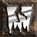
Decrepify 1Golem Mastery 1Iron Golem 1Life Tap 1Raise Skeleton Archer 1Raise Skeleton Warrior 1Teeth 1Weaken 1 OrožjeGrim's Burning Deadv socketih: 3× Ist Rune, Scintillating Jewel of Freedom · korupcija: All SkillsHelmHarlequin Crestv socketih: 2× Um Rune · korupcija: SkillOklepEnigmaJahIthBer · Archon Plate
OrožjeGrim's Burning Deadv socketih: 3× Ist Rune, Scintillating Jewel of Freedom · korupcija: All SkillsHelmHarlequin Crestv socketih: 2× Um Rune · korupcija: SkillOklepEnigmaJahIthBer · Archon Plate RokaviceGravepalmkorupcija: Faster Cast RatePasArachnid Meshkorupcija: Faster Cast RateŠkornjiMarrowwalkAmuletBlood Craft - Necromancerkorupcija: Faster Cast RatePrstanWisp Projectorkorupcija: Faster Cast RatePrstanThe Stone of Jordankorupcija: Faster Cast RateHellfire TorchAnnihilus +2
RokaviceGravepalmkorupcija: Faster Cast RatePasArachnid Meshkorupcija: Faster Cast RateŠkornjiMarrowwalkAmuletBlood Craft - Necromancerkorupcija: Faster Cast RatePrstanWisp Projectorkorupcija: Faster Cast RatePrstanThe Stone of Jordankorupcija: Faster Cast RateHellfire TorchAnnihilus +2Merc: Desert Guard (Defiance)
HelmFlickering FlameNefPulVex · Bone VisageOklepShaftstopOrožjeInfinityBerMalBerIst · War PikeRokaviceBloodfistŠkornjiImp ShankMesh BootsPasSiggard's StaunchRecepti in rune · 16 run, 3 runewordi, 1 craft
NefIthAmnPulUm ×2MalIst ×4VexBer ×3JahKaj nosijo liki 90+ v S13 (skill Raise Skeletal Mage na 20)
Marrowwalk 59 %Harlequin Crest 59 %Gravepalm 58 %Trang-Oul's Scales 57 %Gheed's Fortune 56 %Arachnid Mesh 56 %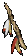
Nethercrux 34 %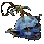
Sacred Totem 28 %Wisp Projector 28 %Grim's Burning Dead 26 %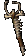
Arm of King Leoric 25 %Bul-Kathos' Wedding Band 23 %Video in vodiči
 Fire GolemsGood
Fire GolemsGood
Leveling
Rune za ves build (7)
NefPulMalIstVexBer ×2Planerji (Hiim)
Blood Golem 20Clay Golem 20Fire Golem 20Golem Mastery 20Iron Golem 20Amplify Damage 1Blood Warp 1Life Tap 1Lower Resist 1Weaken 1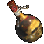
Druga rokaGolemlord's Minion Skull of the ArchmageMinion Skull · korupcija: All SkillsHelmGolemlord's Diadem of the MagusDiadem · korupcija: SkillOklepTrang-Oul's Scaleskorupcija: SkillRokaviceMagefistkorupcija: Faster Cast RatePasArachnid Meshkorupcija: Faster Cast RateŠkornjiImp ShankMesh Boots · korupcija: Faster Run WalkAmuletGolemlord's Amulet of the Apprenticekorupcija: All SkillsPrstanBul Katho's Wedding Bandkorupcija: Faster Cast RatePrstanThe Stone of Jordankorupcija: Faster Cast RateHellfire TorchAnnihilus +2Merc: Desert Guard (Defiance)
HelmFlickering FlameNefPulVex · Bone VisageOklepShaftstopOrožjeInfinityBerMalBerIst · War PikeRokaviceDracul's Grasp ŠkornjiGore RiderPasString of Ears
ŠkornjiGore RiderPasString of EarsRecepti in rune · 7 run, 2 runeworda
NefPulMalIstVexBer ×2Kaj nosijo liki 90+ v S13 (skill Fire Golem na 20)
Trang-Oul's Scales 56 %Arachnid Mesh 51 %Gheed's Fortune 45 %Harlequin Crest 43 %Gravepalm 39 %Dominion 37 %Phoenix 24 %Trang-Oul's Claws 24 %Mara's Kaleidoscope 24 %The Stone of Jordan 22 %Wisp Projector 20 %Bul-Kathos' Wedding Band 19 %Video in vodiči
 Dark PactGoodStarter
Dark PactGoodStarter
Leveling
Rune za ves build (13)
NefEth ×2IthSolIoLum ×3Um ×2BerJahPlanerji (Hiim)
Amplify Damage 20Curse Mastery 20Dark Pact 20 Iron Maiden 20Decrepify 16Blood Golem 1Blood Warp 1Bone Armor 1Clay Golem 1
Iron Maiden 20Decrepify 16Blood Golem 1Blood Warp 1Bone Armor 1Clay Golem 1 Dim Vision 1Golem Mastery 1Iron Golem 1Life Tap 1Teeth 1Weaken 1HelmAccursed DiademDiadem · v socketih: 2× LPK/MPK req FHR Jewel · korupcija: SkillOklepEnigmaJahIthBer · Archon PlateRokaviceTrang-Oul's Clawskorupcija: Faster Cast RatePasArachnid Meshkorupcija: Faster Cast RateŠkornjiImp ShankMesh Boots · korupcija: Mana per killAmuletAccursed Amuletkorupcija: All SkillsPrstanThe Stone of Jordankorupcija: Faster Cast RatePrstanWisp Projectorkorupcija: Mana per killHellfire TorchAnnihilus +2
Dim Vision 1Golem Mastery 1Iron Golem 1Life Tap 1Teeth 1Weaken 1HelmAccursed DiademDiadem · v socketih: 2× LPK/MPK req FHR Jewel · korupcija: SkillOklepEnigmaJahIthBer · Archon PlateRokaviceTrang-Oul's Clawskorupcija: Faster Cast RatePasArachnid Meshkorupcija: Faster Cast RateŠkornjiImp ShankMesh Boots · korupcija: Mana per killAmuletAccursed Amuletkorupcija: All SkillsPrstanThe Stone of Jordankorupcija: Faster Cast RatePrstanWisp Projectorkorupcija: Mana per killHellfire TorchAnnihilus +2Merc: Barbarian (Might)
 HelmVeil of Steel
HelmVeil of Steel OklepPurgatory
OklepPurgatory RokaviceSteelrend
RokaviceSteelrend ŠkornjiWar TravelerPasNosferatu's Coil
ŠkornjiWar TravelerPasNosferatu's CoilRecepti in rune · 5 run, 1 runeword
IthUm ×2BerJahCurse Mastery 20Dark Pact 20Iron Maiden 20Weaken 10Amplify Damage 1Blood Golem 1Blood Warp 1Clay Golem 1Decrepify 1Life Tap 1Lower Resist 1Raise Skeletal Mage 1Raise Skeleton Archer 1Raise Skeleton Warrior 1Revive 1EthLum · Gargoyle HeadOklepSmokeNefLum · Archon Plate PasLenymo
PasLenymoMerc: Ascendant (Sanctuary)
OrožjeMemoryLumIoSolEth · Archon StaffRecepti in rune · 8 run, 3 runewordi
NefEth ×2SolIoLum ×3Kaj nosijo liki 90+ v S13 (skill Dark Pact na 20)
Trang-Oul's Claws 88 %Darkforce Spawn 75 %Blackhand Key 69 %Arachnid Mesh 67 %Harlequin Crest 41 %Gheed's Fortune 31 %Enigma 31 %Bul-Kathos' Wedding Band 22 %Skin of the Vipermagi 20 %The Stone of Jordan 18 %Wisp Projector 14 %Silkweave 12 %Video in vodiči
Green Goblin & SkeletonsDecent
Leveling
Rune za ves build (9)
HelLemGulOhm ×5ZodPlanerji (Hiim)
Amplify Damage 20Golem Mastery 20Raise Skeleton Archer 20Raise Skeleton Warrior 20Skeleton Mastery 20Blood Golem 3Blood Warp 1Clay Golem 1Raise Skeletal Mage 1HelmGolemlord's DiademDiademOklepTrang-Oul's ScalesRokaviceTrang-Oul's ClawsPasArachnid MeshŠkornjiMarrowwalkAmuletGolemlord's AmuletPrstanThe Stone of JordanPrstanThe Stone of JordanAnnihilusHellfire TorchMerc: Rogue Scout (Slow Movement)
 OrožjeDemon Machinev socketih: 5× Ohm Rune · korupcija: socketiOklepInnocence (eth)GulLemZodHel · Lacquered PlatePasString of EarsŠkornjiMarrowwalk
OrožjeDemon Machinev socketih: 5× Ohm Rune · korupcija: socketiOklepInnocence (eth)GulLemZodHel · Lacquered PlatePasString of EarsŠkornjiMarrowwalk RokaviceSoul Drainer
RokaviceSoul Drainer Druga rokaAbyssal Ward
Druga rokaAbyssal Ward HelmGiant Skull
HelmGiant SkullRecepti in rune · 9 run, 1 runeword
HelLemGulOhm ×5ZodKaj nosijo liki 90+ v S13 (skill Raise Skeleton Archer na 20)
Marrowwalk 59 %Arachnid Mesh 59 %Gravepalm 58 %Harlequin Crest 58 %Gheed's Fortune 56 %Trang-Oul's Scales 53 %Arm of King Leoric 41 %Wisp Projector 34 %Bul-Kathos' Wedding Band 26 %Mara's Kaleidoscope 24 %Trang-Oul's Claws 20 %Grim's Burning Dead 19 %Video in vodiči
Blood GolemDecent
Leveling
Rune za ves build (29)
TirNefEth ×3IthTal ×2Ral ×2Ort ThulAmn ×3SolPulMal ×2Ist ×2VexOhm ×3
ThulAmn ×3SolPulMal ×2Ist ×2VexOhm ×3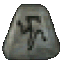
SurBer ×2ChamPlanerji (Hiim)
Blood Golem 20Blood Warp 20Clay Golem 20Golem Mastery 20Iron Golem 3Amplify Damage 1Bone Armor 1Teeth 1 OrožjeEdgeTirTalAmn · Short Bow
OrožjeEdgeTirTalAmn · Short Bow Druga rokaSharp ArrowsSharp ArrowsOrtSol · Cap/hat
Druga rokaSharp ArrowsSharp ArrowsOrtSol · Cap/hat OklepStealthTalEth · Quilted Armor
OklepStealthTalEth · Quilted Armor RokaviceGhoulRI fingerHeavy Gloves
RokaviceGhoulRI fingerHeavy Gloves PasCaster Craft BeltSash
PasCaster Craft BeltSash ŠkornjiBlood trackHeavy BootsAmuletGolemlord's AmuletPrstanShadow coilPrstanWraithra grasp
ŠkornjiBlood trackHeavy BootsAmuletGolemlord's AmuletPrstanShadow coilPrstanWraithra graspMerc: Rogue Scout (Vigor)
HelmDread crestBone Helm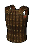
OklepSpirit hideStudded LeatherŠkornjiPain spurSharkskin BootsOrožjePurityAmnEthThul · Short BowDruga rokaSharp ArrowsSharp ArrowsRecepti in rune · 11 run, 4 runewordi, 1 craft
TirEth ×2IthTal ×2OrtThulAmn ×2SolBlood Golem 20Clay Golem 20Fire Golem 20Golem Mastery 20Iron Golem 20Blood Warp 3Amplify Damage 1Bone Armor 1Teeth 1ChamOhm · Lich Wand Druga rokaKalan's LegacyHelmHarlequin CrestOklepTrang-Oul's ScalesRokaviceGravepalmPasArachnid MeshŠkornjiMarrowwalkAmuletMara's KaleidoscopePrstanWisp ProjectorPrstanBul Katho's Wedding BandSwitchCall to ArmsAmnRalMalIstOhm · Crystal Sword
Druga rokaKalan's LegacyHelmHarlequin CrestOklepTrang-Oul's ScalesRokaviceGravepalmPasArachnid MeshŠkornjiMarrowwalkAmuletMara's KaleidoscopePrstanWisp ProjectorPrstanBul Katho's Wedding BandSwitchCall to ArmsAmnRalMalIstOhm · Crystal Sword Switch 2Lidless WallHellfire TorchAnnihilus
Switch 2Lidless WallHellfire TorchAnnihilusMerc: Desert Guard (Defiance)
OrožjeInfinityBerMalBerIst · Cryptic AxeHelmFlickering FlameNefPulVex · Bone VisageOklepBrambleRalOhmSurEth · Archon PlateRokaviceDracul's GraspŠkornjiMarrowwalkPasString of EarsRecepti in rune · 18 run, 5 runewordov
NefEthRal ×2AmnPulMal ×2Ist ×2VexOhm ×3SurBer ×2ChamKaj nosijo liki 90+ v S13 (skill Blood Golem na 20)
Harlequin Crest 53 %Trang-Oul's Scales 45 %Gheed's Fortune 42 %Arachnid Mesh 39 %Gravepalm 33 %Trang-Oul's Claws 28 %Dominion 25 %Wisp Projector 19 %Trang-Oul's Girth 18 %Nagelring 18 %Mara's Kaleidoscope 17 %The Stone of Jordan 15 %Video in vodiči
Clay GolemsStarter
Leveling
Rune za ves build (9)
EthTal ×2RalOrt ×2ThulAmnLumPlanerji (Hiim)
Blood Golem 20Clay Golem 20Golem Mastery 20Amplify Damage 12Curse Mastery 10Blood Warp 1Decrepify 1Life Tap 1Weaken 1EthLum · Gargoyle Head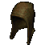
HelmPeasant CrownPasLenymoŠkornjiRite of PassageAmuletGolemlord's AmuletMerc: Iron Wolf (Prayer)
OrožjeSpiritTalThulOrtAmn · Crystal Sword Druga rokaAncient's PledgeRalOrtTal · Bone ShieldPasLenymo
Druga rokaAncient's PledgeRalOrtTal · Bone ShieldPasLenymoRecepti in rune · 9 run, 3 runewordi
EthTal ×2RalOrt ×2ThulAmnLumKaj nosijo liki 90+ v S13 (skill Clay Golem na 20)
Harlequin Crest 54 %Trang-Oul's Scales 48 %Gheed's Fortune 47 %Arachnid Mesh 43 %Gravepalm 36 %Dominion 29 %Trang-Oul's Claws 24 %Mara's Kaleidoscope 20 %Wisp Projector 17 %Bul-Kathos' Wedding Band 16 %Nagelring 16 %Trang-Oul's Girth 16 %Video in vodiči
Ostali buildi
Buildi, ki jih Hiim ne uvršča med viable, ali jih sploh ne ocenjuje, ter buildi iz drugih virov. Uporabni za ideje; za mapping so buildi zgoraj zanesljivejši.
| Build | Vir | Opomba |
|---|---|---|
| Pure Revive (Eternity + Sacred Totem) | Hiim Bad | Hiim solo lista: Bad. Igrljiv, a počasnejši od buildov zgoraj. |
| Only Phys Curses | skupnost | Javni S14 planer v Hiim galeriji (avtor Hiim, 96 ogledov). Skilli na 20: Amplify Damage, Curse Mastery, Golem Mastery, Life Tap, Weaken. Oznake: group. Na Hiim tier listah ga ni. |